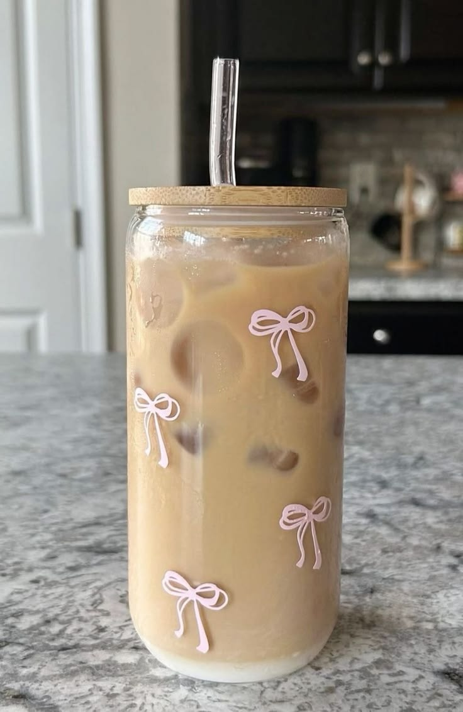

Homemade Whipped Iced Coffee
An easy homemade iced coffee topped with creamy, light-brown whipped coffee foam.
Ingredients
- 2 teaspoons instant coffee powder
- 2 teaspoons sugar
- 1 to 2 tablespoons warm water
- 1 cup chilled milk
- 3 to 4 ice cubes
Instructions
- Add instant coffee powder, sugar, and warm water into a cup.
- Beat or whisk the mixture continuously until it turns thick, creamy, and light brown.
- Fill a glass with ice cubes and chilled milk.
- Spoon the creamy light-brown coffee mixture into the milk, stir gently, and serve.
